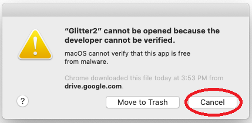

Installation
Glitter2 can be installed either by downloading a pre-compiled application or by installing Glitter2 and all its dependencies to an existing Python installation.
Installing a pre-compiled app
The latest pre-compiled app for Windows or MacOS can be downloaded from the release page
Windows
To update if you previously downloaded Glitter2, simply delete the Glitter2.exe file and continue below.
Download Glitter2.exe and double click to run Glitter2. It will create a configuration .yaml
file next to Glitter2.exe where the application settings is saved as in the following image.
The file can be safely deleted at any time.
When starting Glitter2.exe for the first time, Windows may refuse to run it saying the developer
is unrecognized as in the following image:
To allow it to run, click on the circled More info, which will show the following image:
Click the circled Run anyway and Glitter2 will start.
MacOS
To update if you previously installed Glitter2, in Finder under Applications right click
on Glitter2 and select “Move to trash” and then continue below.
Download Glitter2.dmg and double click to mount and install it. This will launch the following
window. To install, drag the Glitter2 icon into the applications icon:

To launch Glitter2, in Finder browse to Applications and double clock Glitter2
as in the following circled image:
The first time, MacOS will show the following window:
Click the circled cancel first and then on your Mac, choose the Apple menu >
System Preferences, and click Security & Privacy, then click General.
You will see the following window:

Click the lock icon to unlock it, then enter the password and the click the circled
Open anyway.
Then, go back to Applications again and click the Glitter2 icon. This will launch
the following window, where you should click the circled Open:
This will launch Glitter2. To unmount the DMG, on your desktop find the Glitter2 icon
as in the following image, and right click on it and select Eject Glitter2:
Installing from source
Glitter2 can be installed into a Python environment simply with:
pip install glitter2
Once installed, glitter2 can be run either with the glitter2 command or by directly running
python glitter2/run_app.py.